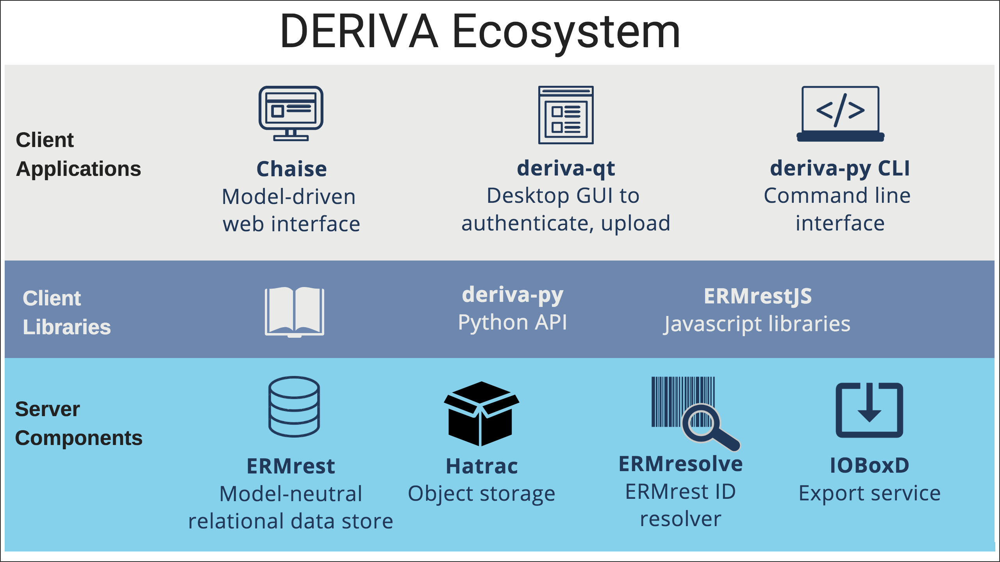

DERIVA Framework¶

- At DERIVA’s core are a suite of server components that store the data, describe the data model, represent the data and provide exporting capabilities.
- Client applications offer a 1) web interface that represents the data, data model and filtering/search capabilities for discovering data, 2) a desktop GUI that data submitters can use to authenticate with the deployment and upload data files and 3) command line interface for interacting with the data.
- Client libraries that…
Let’s take a closer look at each of these layers.
Server Components¶
ERMrest¶
ERMrest is an entity/relationship database web service that acts as a powerful metadata catalog for the data. It enables rich data models and lets you create, then evolve data models that accurately represent the concepts of your domain.
ERMrest supports:
- RESTful web services such as: entity, attribute, schema, table, column, etc.
- Query processing
- Enforcement of policies at row-level access, providing fine-grained security.
Hatrac¶
Hatrac is DERIVA’s object store and is where the data - the scientific assets - “live”. Data is represented as web resources in RESTful service models. Hatrac provides:
- Guarantee of data fixity via immutability (non-jargon) and checksums to ensure data integrity.
- Versioning - tracks different versions of data in a non-destructive way.
- Hierarchical naming scheme
- Access Control Lists (ACLs)
ERMresolve¶
ERMresolve is a trivial identifier resolver and redirect service to help cite entities in an ERMrest catalog. The sole purpose of this service is to provide an easily managed URL space to use in support of data citation.
It is designed to complement the use of CURIEs a.k.a. Compact URIs to form short, permanent, and resolvable identifiers. Typical use would be to associate a CURIE prefix with an ERMresolve deployment - this means a CURIE resolver could translate the CURIE into a valid ERMresolve HTTP URL and then fetch that resource to obtain cited data from ERMrest.
IOBoxD¶
IOBoxd is the “messenger service” of DERIVA and communicates between a DERIVA framework and external data sources.
- Supports diverse sources
- Extract, Transform and Load (ETL) operations
Client Libraries¶
Python APIs (deriva-py)¶
The Python APIs in the deriva-py module include:
- low-level ERMrest interface (see ErmrestCatalog)
- low-level Hatrac interface (see HatracStore)
- higher-level ERMrest catalog configuration (see CatalogConfig)
- higher-level ERMrest “data path” (see documentation and tutorials)
Javascript Libraries (ERMrestJS)¶
ERMrestJS provides javascript bindings for ERMrest protocols with APIs for interacting and working with ERMrest.
Client Applications¶
Web Interface (Chaise)¶
Chaise is our user interface application. Written in Angular Javascript to provide powerful features in the browser. Configure Chaise to choose what and how to display the data in ERMrest and Hatrac.
Users interact with the data (records) via the following capabilities:
- Search and browse (in a faceted search)
- Navigate between records
- Create, alter or extend domain model in catalogs
- Export collections of assets and metadata
- Share collections with others
- Annotate data.
Desktop clients (deriva-qt)¶
DERIVA provides Graphical User Interface tools for submitting data to a DERIA framework:
- An Authentication Agent that connects with your DERIVA security credentials
- File Upload for uploading data from your local environment. This tool is best when your uploading from your own computer and it’s not a very large amount of data.
Commandline Clients (deriva-py)¶
Commands available in the deriva-py module include:
- deriva-acl-config: a command-line ERMrest ACL configuration utility
- deriva-hatrac-cli: a command-line Hatrac client
- deriva-download-cli: a command-line utility for batch export and download of tabular data from ERMrest and objects from Hatrac
- deriva-upload-cli: a command-line data upload and metadata update utility